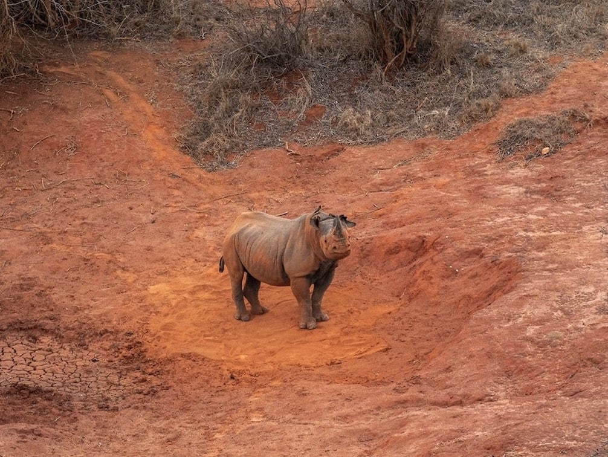
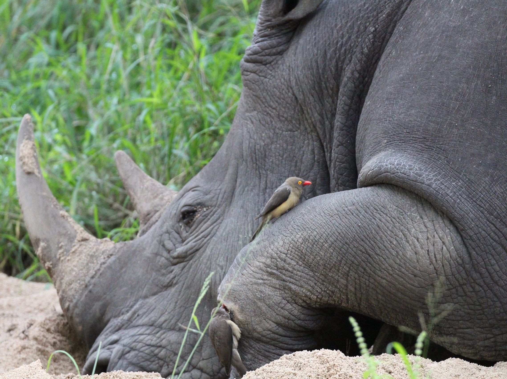
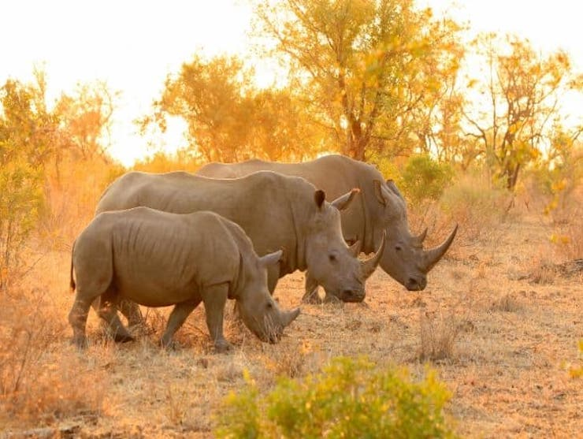

About Rhinos
Explore the world of rhinos—uncover their stories, challenges, and the path to conservation.
Rhino Species

The White Rhinoceros (Ceratotherium simum) is renowned as the largest rhino species, distinguished by its broad, square-shaped mouth adapted for grazing on grasses. Despite its name, "white" is believed to be a misinterpretation of the Afrikaans word "weit," meaning wide. The species comprises two subspecies—the Southern White Rhino, which has rebounded from near extinction, and the critically endangered Northern White Rhino, with only a few individuals remaining.
In contrast, the Black Rhinoceros (Diceros bicornis) is recognized for its hooked upper lip, tailored for browsing on shrubs and trees. This species tends to be more solitary and elusive, facing severe threats from poaching, resulting in a significant decline in its population.
The Indian Rhinoceros (Rhinoceros unicornis) boasts a distinctive single horn and armor-like skin folds. Native to the Indian subcontinent, this species has experienced population rebounds in protected areas but remains vulnerable to habitat loss and poaching.
The Sumatran Rhinoceros (Dicerorhinus sumatrensis), the smallest of the rhino species, features unique, long body hair and is native to the dense tropical forests of Sumatra and Borneo. Critically endangered, this species faces threats from habitat loss and a small population size.
Lastly, the Javan Rhinoceros (Rhinoceros sondaicus), similar in appearance to the Indian Rhinoceros, is native to Java, Indonesia. Also critically endangered, it confronts challenges such as habitat loss and human encroachment.
Threats to Rhinos
Rhinos face an array of formidable threats that jeopardize their survival in the wild. Foremost among these is rampant poaching driven by the illegal trade in rhino horns. The demand for these horns, erroneously believed to have medicinal properties in some cultures, fuels a lucrative black market, leading to a significant decline in rhino populations globally. Poachers often employ sophisticated methods, including high-powered weaponry and even helicopters, making it a constant challenge for conservationists and authorities to combat this illicit trade effectively.
Habitat loss poses another critical threat to rhinos as human populations expand and encroach upon their natural territories. Urbanization, agriculture, and infrastructure development contribute to the fragmentation and degradation of rhino habitats, limiting their access to food, water, and suitable breeding grounds. This habitat loss exacerbates the vulnerability of rhino populations, particularly for species with already limited ranges, such as the Javan and Sumatran rhinoceros.
Furthermore, climate change introduces a new layer of risk for rhinos. Altered weather patterns, prolonged droughts, and habitat modifications impact the availability and quality of their food sources, making it more challenging for rhino populations to thrive. Addressing these multifaceted threats demands coordinated international efforts, including strengthened anti-poaching measures, habitat preservation initiatives, and strategies to mitigate the impacts of climate change on rhino habitats.

Rhino Statistics

In 2012, South Africa faced a dire surge in rhino poaching, resulting in 1,004 casualties. Conservation efforts led to a 41% reduction by 2019 (594 poached), underscoring progress while highlighting the persistent challenge. The Northern White Rhino, with only two remaining individuals, has experienced a staggering 99.8% decline, emphasizing the urgent need for innovative conservation measures.
The Javan and Sumatran Rhinoceros, both critically endangered, have seen drastic declines, with fewer than 80 individuals estimated for each species. The Javan Rhinoceros has experienced a 95% decline from historical levels, while the Sumatran Rhinoceros has seen an 80% decrease. These stark percentages underscore the urgent need for focused conservation actions.
In contrast, the Southern White Rhino, once near extinction with about 100 individuals in 1960, has rebounded remarkably to over 18,000 in recent years, showcasing a phenomenal recovery of over 17,900%. This success story highlights the positive impact of sustained conservation initiatives, offering hope for the potential recovery of rhino populations with concerted efforts.
As we reflect on these statistics, it is crucial to recognize the delicate balance between progress and the ongoing threats that demand continuous dedication to safeguarding rhinos and their habitats.
The Importance of Rhinos
Rhinos play a pivotal role in maintaining the delicate balance of ecosystems, making their conservation vital for the health and biodiversity of our planet. As grazers, rhinos contribute to shaping and regulating the landscape by influencing the growth and distribution of vegetation. Their feeding habits help control grass and plant populations, preventing overgrowth in certain areas and promoting biodiversity by creating varied habitats. The intricate relationship between rhinos and their ecosystems underscores the integral role they play in shaping the natural world.
Beyond their ecological significance, rhinos are charismatic megafauna that serve as flagship species for conservation efforts. Their iconic status draws attention to broader conservation issues and fosters public awareness about the interconnectedness of all species within an ecosystem. By focusing on rhino conservation, we address broader challenges such as habitat loss, illegal wildlife trade, and the overarching need for preserving biodiversity. In this way, protecting rhinos becomes a gateway to safeguarding entire ecosystems and the myriad species that coexist within them.
Moreover, rhinos hold cultural and economic importance for local communities. In many regions, these majestic creatures are revered as symbols of strength, resilience, and natural heritage. Furthermore, rhino-related eco-tourism contributes to local economies, offering sustainable alternatives to poaching and illegal activities. Recognizing the multifaceted importance of rhinos, both ecologically and culturally, reinforces the urgency of concerted global efforts to ensure their continued existence and the preservation of the ecosystems they inhabit.
